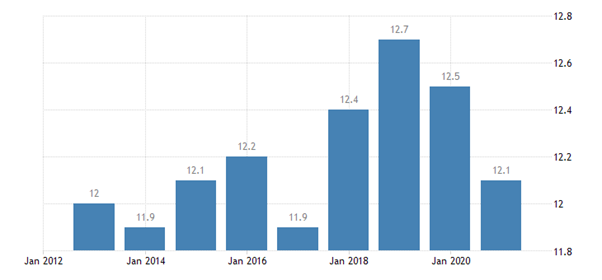

Located in Northern Europe, Denmark consists of the peninsula of Jutland and 443 named islands (1,419 islands above 100 square metres (1,100 sq ft) in total Of these, 74 are inhabited (January 2015),[56] with the largest being Zealand, the North Jutlandic Island, and Funen. The island of Bornholm is located east of the rest of the country, in the Baltic Sea. Many of the larger islands are connected by bridges; the resound Bridge connects Zealand with Sweden; the Great Belt Bridge connects Funen with Zealand; and the Little Belt Bridge connects Jutland with Funen. Ferries or small aircraft connect to the smaller islands. The four cities with populations over 100,000 are the capital Copenhagen on Zealand; Aarhus and Aalborg in Jutland; and Odense on Funen. Denmark has a developed mixed economy that is classed as a high-income economy by the World Bank. In 2017, it ranked 16th in the world in terms of gross national income (PPP) per capita and 10th in nominal GNI per capita. Denmark's economy stands out as one of the most free in the Index of Economic Freedom and the Economic Freedom of the World. It is the 10th most competitive economy in the world, and 6th in Europe, according to the World Economic Forum in its Global Competitiveness Report 2018. Denmark has the fourth highest ratio of tertiary degree holders in the world. The country ranks highest in the world for workers' rights. GDP per hour worked was the 13th highest in 2009. The country has a market income inequality close to the OECD average, but after taxes and public cash transfers the income inequality is considerably lower. According to Eurostat, Denmark's Gini coefficient for disposable income was the 7th-lowest among EU countries in 2017. According to the International Monetary Fund, Denmark has the world's highest minimum wage. As Denmark has no minimum wage legislation, the high wage floor has been attributed to the power of trade unions. For example, as the result of a collective bargaining agreement between the 3F trade union and the employers group Horesta, workers at McDonald's and other fast food chains make the equivalent of US$20 an hour, which is more than double what their counterparts earn in the United States, and have access to five weeks' paid vacation, parental leave and a pension plan. Union density in 2015 was 68%.
COPENHAGEN — The small country of Denmark is often viewed as a model society for metrics like gross national happiness and high employment rates. Their poverty reduction tactics are equally successful and foreign governments may be able to pick up a few tips on how Denmark combats poverty rates. Overall employment in a country is one way to measure success of poverty reduction methods as well as minimum wage and wage dispersion statistics. According to an international group called Organization for Economic Co-operation and Development (OECD), Denmark’s employment rates are currently measured at around 72.8 percent placing Denmark 7th highest on a global level and well above the OECD global average. So, how does Denmark combat poverty rates nationally? One element of the Danish government that contributes to their high living standards and low poverty rates is their prioritization of social welfare and public expenditure. Unlike other countries where economic development and industrialization may take precedent to social programs, Danish public spending on social protection is the 2nd highest globally, accounting for 30.8 percent of the country’s GDP. Further, it comes as no surprise that they exceed most international averages in an area that is seen as a top priority.
Beyond prioritization of the issue, Denmark combats poverty rates through the unification and centralization of social programs. While workers unions often serve independently between companies in other countries, Denmark strives to unify workers unions for increased negotiation power. Danish Employers' Confederation was created in order to leverage wages among large employers for minimum wages, hours of work, cost of living compensation and certain social benefits. As a result, the Confederation has been able to establish unified systems across the entire country for daily allowances for sickness, maternity and work accidents. Most large companies belong to this group and comply with the group's negotiations in order to increase employee satisfaction and living standards across the board. The Confederation works to increase wages while maintaining employment rates for all Danes. Beyond increasing wages for the middle class, the group also strives to increase wages for unskilled or low-skilled workers at a rate much higher than that of skilled workers. For example, the group was able to negotiate a 1 percent increase in total wages for skilled workers and a 2 percent increase in wages for untrained workers. This unproportionate increase further allows unskilled workers to escape from poverty and low standards of living in Denmark. Unlike other countries that view poverty as an inevitable aspect of society, Denmark sees poverty as anachronistic, or belonging to an earlier period in time and something that no longer needs to exist in the current era. The country acknowledges that they need to maintain economic growth and competition but that this competition does not need to come at the expense of low class citizens. In order to help lower class citizens become flexible, dependable and skilled workers, the Danish government sponsors vocational programs to train unskilled workers in the areas they wish to have salaried careers. By pairing these sponsored services with workers’ interest areas, workers are motivated to move up the social ladder and become active, skilled workers within the Danish economy. Denmark combats poverty rates through prioritization of the national issue combined with the implementation of a number of social programs aimed at increasing employment and eliminating unlivable working wages. Central organization of these programs is key to establishing negotiating power among large employers meanwhile ensuring job security of workers. Further, training programs allow citizens to develop skill and passion for their work in order to contribute and participate in the economy.
